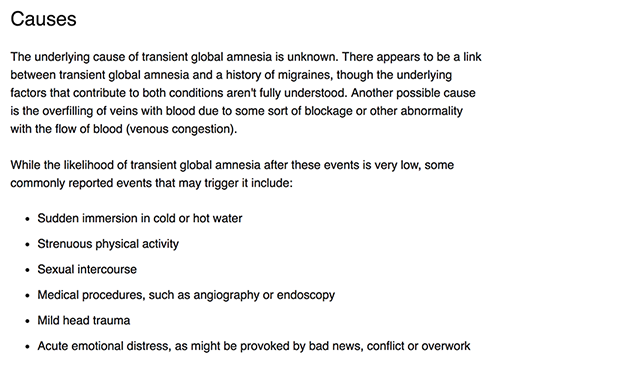

Help me.
I live overseas, but somehow I am in New York now.
I don’t remember how I got here, or why I am here.
I can’t remember anything.
My sister is in New York, but she is just not answering the phone.

https://www.mayoclinic.org/diseases-conditions/transient-global-amnesia/symptoms-causes/syc-20378531